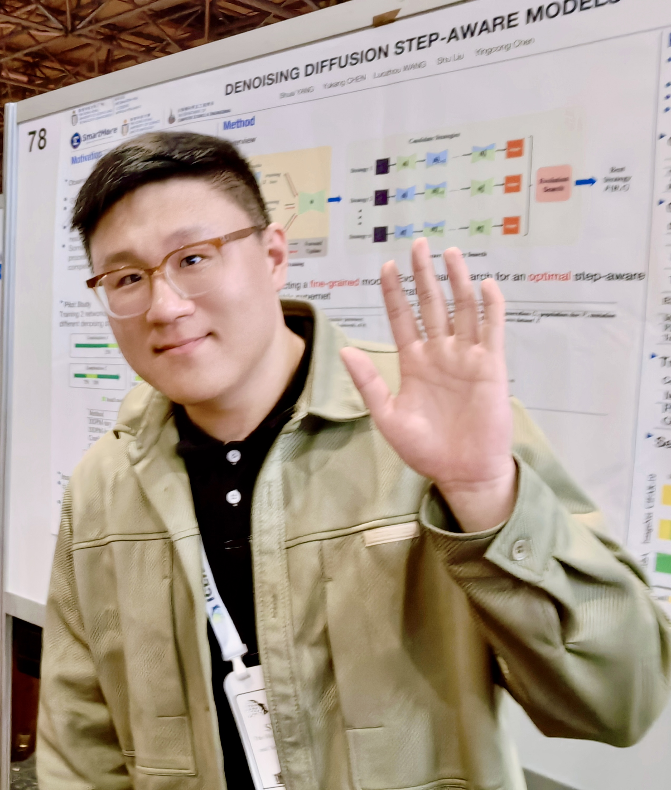

Shuai Yang
Ph.D. student |
 |
Biography
Hello! I am currently a PhD student (since 2022) at the AI Thrust, The Hong Kong University of Science and Technology (Guangzhou), under the guidance of Dr. Yingcong Chen. My research interests are in deep learning and computer vision, with a particular focus on efficient deep learning and generative models. I have also had the privilege of working closely with Dr. Yukang Chen.
Previously, I earned my Bachelor's degree from the School of Computer Science and Engineering at Beihang University (BUAA).
Publications [Google Scholar]
*: Equal Contribution

SEED-Story: Multimodal Long Story Generation with Large Language Model
Shuai Yang, Yuying Ge, Yang Li, Yukang Chen, Yixiao Ge, Ying Shan, Yingcong Chen.
arxiv preprint.
[Paper]
[Model]
[Data]
[Code]

Defect Spectrum: A Granular Look of Large-Scale Defect Datasets with Rich Semantics
Shuai Yang*, Zhifei Chen*, Pengguang Chen, Xi Fang, Shu Liu, Yingcong Chen.
European Conference on Computer Vision (ECCV), 2024.
[Paper]
[Project Page]
[Data]
[CODE]
Low-Rank Approximation for Sparse Attention in Multi-Modal LLMs
Lin Song, Yukang Chen, Shuai Yang, Xiaohan Ding, Yixiao Ge, Yingcong Chen, Ying Shan.
IEEE/CVF Conference on Computer Vision and Pattern Recognition (CVPR), 2024.
[Paper]
Denoising Diffusion Step-aware Models
Shuai Yang, Yukang Chen, Luozhou Wang, Shu Liu, Yingcong Chen.
International Conference on Learning Representations (ICLR) 2024.
[Paper]
[CODE]
Not All Steps are Created Equal: Selective Diffusion Distillation for Image Manipulation
Luozhou Wang*, Shuai Yang*, Shu Liu, Yingcong Chen
IEEE/CVF International Conference on Computer Vision (ICCV), 2023
[Paper]
[CODE]
Experience
-
ARC Lab, Tencent PCG
Nov 2023 - Jul 2024
Research intern at SEED-Group, working on multimodal LLM -
Smartmore
Nov 2020 - Aug 2022
Full-time computer vision engineer working on tool-chains -
Sensetime
Dec 2019 - Jun 2020
Research intern working on neural architecture search (NAS) -
University of California, Los Angeles
Sep 2019 - Oct 2019
Research Assistant at AI in Imaging and Neuroscience Lab -
Tsinghua University
Sep 2018 - Jun 2019
Research Assistant in School of Software
Honors & Awards
| Postgraduate Scholarship, HKUST(GZ) | 2022 - 2026 |
| 1st place on The Third Workshop on Neural Architecture Search, CVPR2022 | 2022 |
| Distinguished Graduate, School of Computer Science and Engineering, BUAA | 2020 |
| Undergraduate Research Scholarship, BUAA | 2019 |
Academic Services
Conference Reviewer:
- NeurIPS: 24
- ECCV: 24
- ICCV: 23
Teaching
| AIAA5023 Introduction to Computer Vision, HKUST(GZ) | 2023-2024 | |
| AIAA5045 Medical Imaging, HKUST(GZ) | 2023-2024 | |
| Principles of Computer Composition, BUAA | 2018-2019 | |
| C Programing, BUAA | 2017-2018 |
© Shuai Yang | Last updated: Jul. 2024